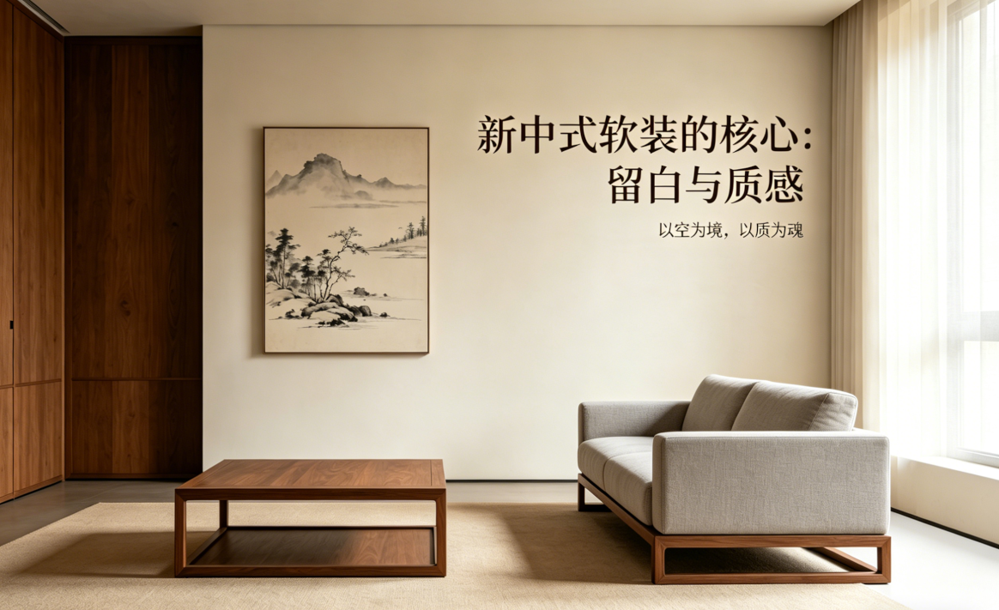
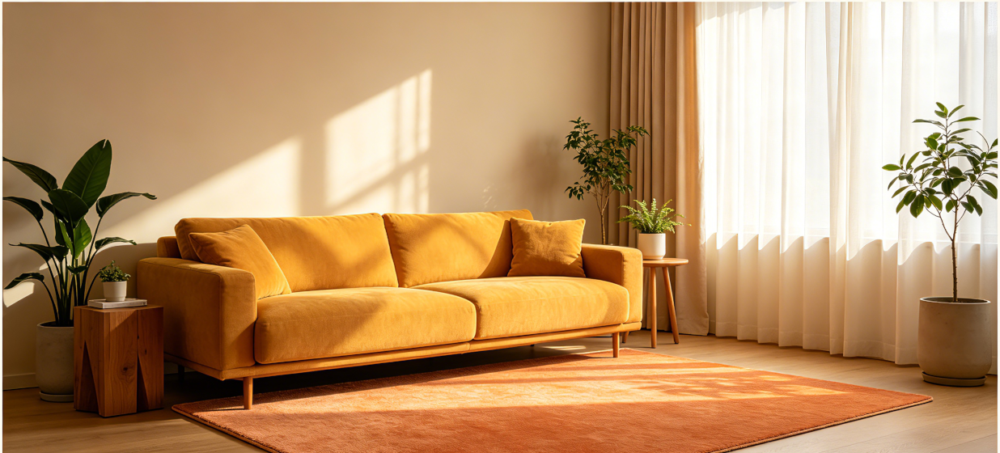
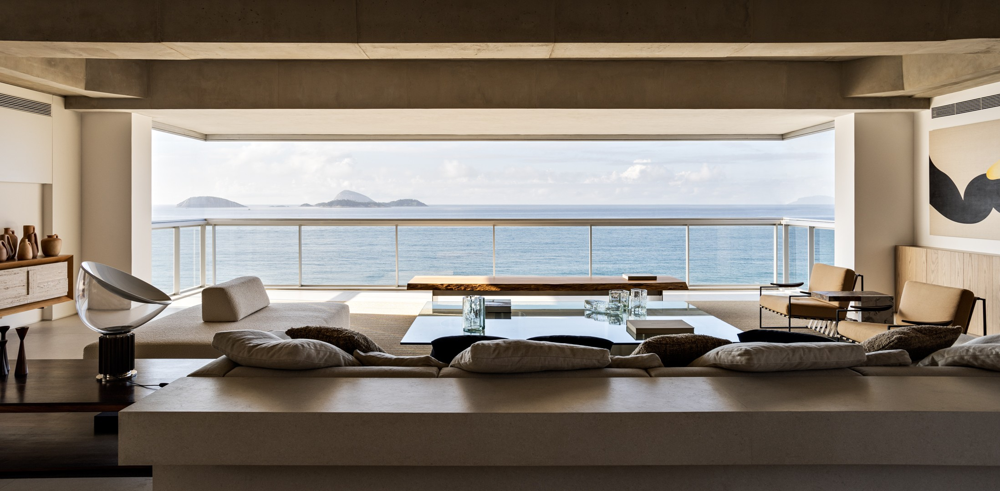
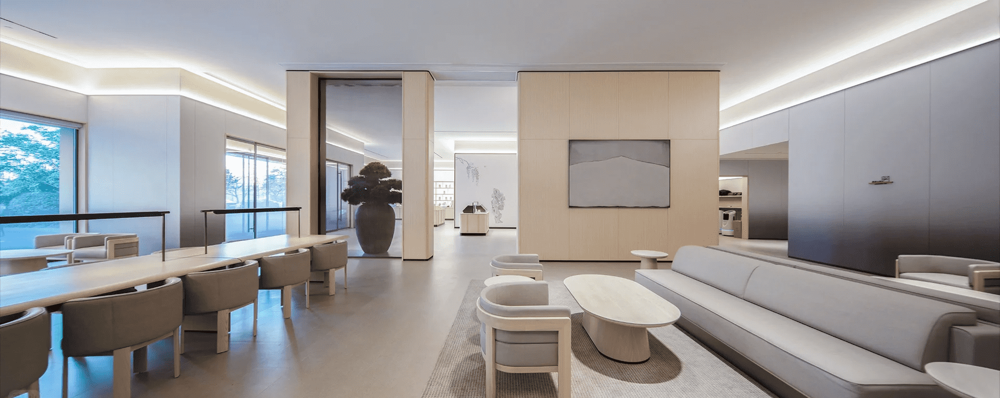

☰

当下，新中式风格在软装设计领域愈发受到青睐，它打破了人们对传统中式“厚重、繁琐、古板”的固有认知，以东方美学为根基，融合现代生活理念，打造出兼具雅致底蕴与实用舒适的空间格调。而支撑起新中式软装灵魂的，正是“留白”与“质感”两大核心——留白是东方哲思的视觉表达，质感是生活温度的具象承载，二者相辅相成、缺一不可，共同诠释着新中式软装的独特魅力，让传统美学在当代生活中焕发新生。
新中式软装的精髓，在于留白的艺术，而非传统元素的简单堆砌。东方美学自古讲究“计白当黑”，这一理念源于中国传统书画，画面中刻意留出的空白，并非空洞无物，而是与笔墨线条相互呼应，给人以无限的想象空间，所谓“无画处皆成妙境”，便是留白的最高境界。将这一美学理念运用到软装设计中，留白便不再是单纯的“空白”，而是空间的“呼吸感”，是气质的“留白处”，更是居者心境的延伸。
恰维在新中式软装设计中，始终坚守“少而精”的原则，将留白艺术贯穿设计的每一个环节，摒弃了传统中式中过于繁琐的雕花、冗余的装饰与厚重的色彩堆砌，以极简的线条勾勒东方意境，让空间回归本质。不同于现代极简的“极致留白”，新中式的留白更具层次感与东方韵味，它不是大面积的空白堆砌，而是“疏密有致、虚实结合”的巧妙布局。例如，在客厅设计中，我们不会让家具、装饰填满整个空间，而是刻意留出墙面、地面的部分空白，搭配简约的实木沙发、低矮的茶桌，再点缀一件水墨挂画或一盆琴叶榕，让空白与陈设相互映衬，既避免了空间的压抑感，又营造出“虚实相生”的雅致意境。
留白的意义，不仅在于视觉上的舒适，更在于对空间气质的塑造与居者生活状态的适配。在快节奏的当代生活中，人们渴望从繁琐的事务中解脱，追求一份内心的宁静与从容，而新中式的留白，恰好契合了这种需求。它减少了视觉上的干扰，让空间变得通透、静谧，让居者在步入空间的瞬间，就能卸下疲惫，感受东方美学带来的松弛感。同时，留白也为空间赋予了灵活性与包容性，居者可以根据自己的喜好，随时添加一件摆件、一幅挂画，让空间始终保持新鲜与活力，也让软装设计更具个性化。
如果说留白是新中式软装的骨架，那么质感便是其灵魂所在，没有质感的留白，只会显得空洞乏味；没有留白的质感，又会显得厚重压抑。新中式软装所追求的质感，并非奢华张扬，而是一种温润、内敛、自然的高级感，它源于对天然材质的敬畏与合理运用，源于对细节的极致把控，更源于对生活温度的精准捕捉。
恰维在材质选择上，始终坚持“天然为本”，精选各类原生材质，让每一种材质都能发挥其独特的肌理与气质，通过材质的碰撞与融合，为空间赋予温度与层次。温润厚重的实木是新中式软装的核心材质，我们选用胡桃木、白蜡木等优质木材，保留木材本身的天然纹理与温润触感，无论是沙发、茶桌，还是衣柜、屏风，都能感受到木材带来的自然气息，彰显中式风格的沉稳与雅致。细腻柔软的棉麻面料则用于窗帘、抱枕、床品等软装搭配，其质朴的肌理的柔和的色调，既能中和实木的厚重感，又能为空间增添一份温柔与舒适，让居者在触摸间感受到生活的暖意。
除了实木与棉麻，通透灵秀的玉石、古朴内敛的陶土、温润雅致的瓷器，也是新中式软装中常用的材质。玉石多用于摆件、挂件，其通透的质感与温润的光泽，为空间增添了一份灵动与贵气；陶土与瓷器则常用于花瓶、茶具，古朴的造型与细腻的肌理，承载着中式文化的底蕴，让空间更具人文气息。此外，我们还会适当运用金色金属作为点缀，如金属边框、拉手、摆件等，低调的金色不张扬、不浮夸，既能提升空间的精致度，又能与天然材质相互呼应，实现“古今融合”的设计效果——既保留了中式的沉稳内敛，又增添了现代生活的精致简约。
"留白是东方的智慧，质感是生活的温度，二者结合，方为有灵魂的新中式软装。"
这句话精准诠释了新中式软装的核心逻辑。留白为质感提供了展示的空间，让每一种材质的肌理与气质都能被清晰感知；质感则为留白赋予了内涵与温度，让空白的空间不再空洞，而是充满生活的气息。二者相互成就，让新中式软装既具备东方美学的雅致底蕴，又符合现代生活的实用需求，真正实现了“诗意栖居”的生活理想。
在实际项目设计中，我们始终坚持“以人为本”，不会拘泥于固定的设计模板，而是根据空间的功能属性、户型大小以及主人的生活习惯、审美偏好，精准把控留白的比例与质感的搭配，让设计更贴合居者的生活需求。例如，客厅作为家庭活动的核心区域，我们会采用大面积的留白，搭配简约大气的实木家具与少量点睛的艺术品，既保证了空间的通透感与活动空间，又营造出雅致大气的氛围；卧室作为休憩空间，我们则会采用局部留白，减少不必要的装饰，搭配柔软的棉麻床品与温润的实木家具，让空间更显静谧、舒适，助力居者获得良好的睡眠；书房则注重留白与质感的平衡，留白的墙面搭配实木书桌与书架，点缀一幅水墨挂画与一盆文竹，既营造出安静的阅读氛围，又彰显出居者的文化品味。
新中式软装的留白与质感，从来都不是孤立存在的，它们是东方美学与现代生活的完美融合，是对传统的传承与创新。留白藏着东方人的处世智慧，不争不抢、虚实相生；质感承载着现代人的生活追求，舒适自然、温润高级。在快节奏的当代社会，新中式软装以留白卸去繁琐，以质感承载温度，让人们在喧嚣的尘世中，能拥有一处兼具雅致与舒适的栖居之地，在方寸空间里，感受东方美学的魅力，品味生活的诗意与本真。

现代都市生活节奏快，压力大，朝九晚五的奔波、钢筋水泥的环绕、碎片化信息的轰炸，让人们在疲惫中愈发渴望一处能卸下防备、安放情绪的角落。人们对家的期待，早已不再局限于遮风挡雨的物理空间，更成为了滋养心灵、治愈疲惫的精神港湾。在软装设计中，冷色调虽能营造出简约高级的视觉效果，却往往自带疏离感与冰冷感，久居其中易让人产生孤独感，难以真正放松身心；而暖色系软装，恰好能平衡空间的质感与温度，让家既有精致的高级感，又充满人间烟火气，成为治愈现代都市人焦虑的温柔解药。
恰维深耕软装设计多年，深谙现代人群的居住需求，打造出专属的暖色系软装体系，以贴近自然的色彩为核心，为人们构建有温度、有质感的居住空间。这套体系以米白、暖金、浅棕、焦糖色为四大核心色调，搭配低饱和度的赤陶色、奶茶色、浅杏色，形成层次丰富、和谐统一的暖色调矩阵，拒绝单一暖色的单调乏味，让每一种色彩都发挥出治愈人心的力量。这些色彩并非刻意雕琢，而是源于自然本身——大地的醇厚浅棕、阳光洒落的暖金、棉麻织物的纯净米白、焦糖的温润醇厚，每一种颜色都能唤起人们对自然的亲近感，仿佛将山林间的清风、阳光下的暖意搬进家中，缓解视觉疲劳与心理焦虑，让紧绷的神经在不经意间得到舒缓。
"暖色系不是单一的暖色，而是有温度、有层次的色彩系统，让空间成为治愈人心的容器。"
恰维软装设计总监这样说道。在快节奏的现代生活中，人们渴望的不是张扬刺眼的色彩冲击，而是温和、舒缓、有归属感的空间氛围，而恰维的暖色系软装，正是抓住了这一核心需求，通过科学的色彩搭配，让空间既有温度又不失格调。不同于传统暖色系容易显得沉闷、甜腻的弊端，恰维的暖色系软装更注重色彩的饱和度与层次感，低饱和的色调的搭配，让空间显得柔和而不压抑，温暖而不浮夸，适配各种现代家居风格，无论是简约风、北欧风，还是轻奢风、新中式，都能完美融入，为空间注入温柔的治愈力。
在色彩应用上，恰维始终遵循“70-25-5”的黄金搭配原则，让暖色系软装的呈现更具科学性与美感，既保证了整体的和谐统一，又避免了单调与沉闷。其中，70%的基础暖色调以米白、浅棕为主，作为空间的底色，奠定温暖柔和的整体基调——墙面采用米白色乳胶漆，地面铺设浅棕色实木地板，沙发、窗帘选用棉麻质地的米白或浅棕面料，让空间从视觉上就给人一种柔软、舒适的感觉，仿佛被温暖包裹。25%的辅助暖色调以暖金、焦糖色为主，用于增加空间的层次感与精致度：暖金色的灯具、装饰画边框，焦糖色的抱枕、地毯、单人沙发，这些细节装饰不仅丰富了空间的色彩层次，更增添了几分轻奢质感，让温暖中多了一份精致与格调。
最后的5%则是点缀色，以低饱和的赤陶色、墨绿色为主，用于提亮空间，打破暖色调的沉闷感——赤陶色的陶瓷花瓶、墨绿色的绿植盆栽，或是一幅带有赤陶色元素的装饰画，小小的点缀的，却能让整个空间瞬间变得生动鲜活，既有暖色系的温柔，又有自然元素的生机与活力。这种科学的搭配方式，既兼顾了美观与实用，又精准契合了现代人群对治愈空间的需求，让每一个角落都充满温暖与细节，让人们在回家的那一刻，就能卸下一天的疲惫，沉浸在温柔舒适的氛围中。
从五星级酒店的高端接待空间，到城市核心区的高端住宅，再到普通家庭的温馨小屋，恰维的暖色系软装设计，凭借其独特的治愈力与精致的质感，赢得了广大客户的高度认可与好评。许多高端住宅的业主反馈，原本冰冷空旷的空间，经过恰维暖色系软装的打造，变得温暖而有归属感，每天下班回家，推开门的那一刻，所有的压力与焦虑都能得到缓解，仿佛被温柔相拥；五星级酒店的负责人则表示，暖色系软装让酒店空间摆脱了传统高端场所的疏离感，让宾客感受到家一般的温馨与舒适，大幅提升了宾客的入住体验。
现代生活的治愈，从来都不是轰轰烈烈的仪式，而是藏在细节里的温柔。暖色系软装，以自然为灵感，以色彩为媒介，以科学为支撑，将温暖与治愈融入家居的每一个角落，平衡了空间的质感与温度，既满足了人们对高级感的追求，又填补了心灵的空缺。在这个快节奏、高压力的时代，恰维用暖色系软装，为人们打造出一处处有温度、有质感的居住空间，让家真正成为治愈心灵的港湾，让每一个身处其中的人，都能在温暖中重拾力量，拥抱生活的美好与温柔。

极简软装不是简单的“少放东西”，而是拒绝冗余装饰，精选每一件陈设，让空间简洁而不简单。在当下快节奏的生活中，人们被繁杂的物质所包围，越来越多的人开始追求简约、通透的居住环境，而“少即是多”的软装理念，恰好契合了这种生活诉求。恰维始终坚持“少即是多”的设计哲学，认为好的软装设计应该做减法，摒弃一切无用的装饰，让每一件物品都有其存在的价值，让空间回归本真，承载居住者的生活与情感。
在软装搭配中，我们始终坚持“功能优先，美学为辅”的原则，先明确空间的核心功能需求，再结合美学设计进行搭配，避免为了装饰而装饰。家具选择上，优先考虑线条简洁、实用性强的款式，摒弃复杂的雕花、繁琐的造型与多余的装饰，以简约的轮廓勾勒空间的质感，既节省空间，又能营造出干净利落的视觉效果。比如沙发选择纯色布艺款或实木款，没有多余的装饰元素，却能凭借舒适的坐感和简约的设计，成为空间的核心单品。
布艺选择上，我们注重材质的触感与色彩的和谐统一，而非盲目追求图案的繁复。棉麻、羊绒等天然材质的布艺，不仅触感舒适，还能带来自然温润的质感，搭配低饱和度的纯色或简约条纹，既能与家具完美融合，又能提升空间的柔和度。避免使用多种图案、多种色彩的布艺拼接，以免造成视觉杂乱，打破空间的简洁感。
艺术品选择上，我们始终坚信“少而精”，一两件点睛之作远胜于一堆平庸的装饰。一幅简约的挂画、一件小巧的陶瓷摆件、一束干花，都能成为空间的亮点，无需过多堆砌，就能为空间增添艺术气息。这些艺术品的选择，需贴合空间的整体风格，与家具、布艺形成呼应，让每一件艺术品都能融入空间，而非孤立存在。
"少不是空，而是精准；多不是满，而是杂乱。极简软装的精髓，在于精准的选择与恰到好处的搭配。"
很多人对极简软装存在误解，认为极简就是“空无一物”，实则不然。极简软装的“少”，是对物品的精准筛选，是去掉一切无用的冗余，留下真正需要、真正喜欢的东西；而“多”，则是让每一件留下的物品，都能发挥其最大价值，让空间在简洁中蕴含丰富的细节与质感。
以我们的别墅软装案例为例，客厅作为家庭活动的核心区域，我们没有进行过多的装饰，仅摆放了一张实木沙发、一张简约茶几和一盏落地灯，搭配少量绿植与一件东方意境的挂画。看似简单的搭配，每一件物品都经过精心挑选：沙发的高度符合人体工学，久坐不累；茶几的尺寸适配空间比例，既方便放置物品，又不显得拥挤；落地灯的光线柔和，既能满足照明需求，又能营造出温馨的氛围；绿植为空间注入生机，挂画则增添了东方韵味，起到了画龙点睛的作用。整个空间虽陈设不多，却功能齐全、气质十足，让人在进入空间的瞬间，就能感受到宁静与舒适。
这种“少即是多”的搭配理念，不仅让空间更显通透、整洁，减少视觉压迫感，也让居住者的生活更简单、更纯粹。在物质过剩的时代，我们被太多不必要的物品所裹挟，而极简软装通过做减法，让居住者摆脱物质的束缚，专注于生活本身。它不仅是一种美学选择，更是一种生活态度——不追求浮华，不盲目跟风，在简约中寻找生活的本真，在纯粹中感受生活的美好。

在快节奏的当代生活中，人们对居住空间的需求早已超越单纯的实用功能，更渴望在忙碌中寻得一份内心的安宁与文化的归属感。传统中式元素自带厚重的历史底蕴与人文气息，但复杂的纹饰、繁琐的造型往往与现代人简洁、高效的生活节奏格格不入；而纯粹的现代风格虽简洁利落、适配性强，却常常显得冰冷单调，缺乏文化根基与情感温度。恰维深耕软装设计领域，精准捕捉这一痛点，取东方美学之精髓，结合现代极简工艺，打破传统与现代的壁垒，打造出适合当代人的软装设计，让千年东方文脉与现代生活完美交融，让传统之美在当下焕发新生。
我们对东方美学的提取，从不是简单的符号复制与元素堆砌，而是对其精神内核的深度传承与当代转译。东方美学的精髓，在于“意境”与“匠心”，在于人与自然的和谐共生，这份理念被我们巧妙融入软装设计的每一个细节之中。比如，将中式园林“移步换景”的造园理念融入空间布局，摒弃传统园林的繁复堆砌，以简约的绿植、通透的隔断、错落的摆件，打造出层次分明、节奏舒缓的空间感，让居住者在移动间便能感受一步一景、一景一情的雅致；将中式书画“留白”“写意”的意境融入色彩搭配，以素白、浅灰、雅棕等低饱和色调为基底，点缀墨绿、黛蓝等中式经典色彩，拒绝浓墨重彩的张扬，让空间既有静谧悠远的氛围，又藏着不张扬的故事感；将中式器物“精益求精”的匠心融入材质选择，优选天然实木、棉麻、陶瓷等原生材质，摒弃过度的人工修饰，保留材质本身的纹理与质感，让空间褪去冰冷，多了一份触手可及的温度与烟火气。
"东方美学的核心是意境，现代生活的核心是舒适，我们要做的，是让意境融入舒适，让传统服务现代。"
这是恰维始终坚守的设计理念。我们深知，设计的本质是服务于人，东方美学的传承不应是复古怀旧，而是让其适配现代生活的需求，成为滋养当代人精神世界的载体。因此，我们不追求对传统元素的原样复刻，而是将其进行现代化演绎，实现传统与现代的有机融合。
在具体设计实践中，这样的融合随处可见。传统圈椅是中式家具的经典符号，我们保留其圆润流畅的经典轮廓，简化繁琐的雕花纹饰，将厚重的实木改为更轻盈的白蜡木、胡桃木，搭配简约的软包，既保留了圈椅的雅致韵味，又增强了使用的舒适度，适配现代客厅、书房等多种场景；传统水墨画是东方美学的重要载体，我们不再局限于传统卷轴的呈现形式，而是将水墨意境以抽象的线条、渐变的色彩呈现在现代画布、墙布上，或是印在棉麻抱枕、窗帘等软装单品上，让水墨之美融入日常；传统榫卯工艺是中式匠心的体现，我们将这一古老工艺应用在简约的现代家具中，无需一颗铁钉，便能实现家具的稳固与美观，既传承了传统工艺的精髓，又契合了现代人家居简约、耐用的需求。这种融合不是生硬的拼接，而是深入骨髓的契合，让东方美学以更轻盈、更现代、更贴近生活的方式，渗透到居住的每一个角落。
从五星级酒店的公共空间到高端住宅的私人居所，恰维的每一件设计作品，都生动诠释了东方美学与现代生活融合的魅力。在五星级酒店的大堂，我们以简约的石材地面搭配中式屏风，以现代灯光映衬水墨装饰，既有高端大气的现代质感，又有温润雅致的东方韵味，让宾客在步入空间的瞬间，便能感受到东方文化的底蕴与静谧；在高端住宅中，我们根据居住者的生活习惯，将中式元素与现代生活场景深度结合，书房里的简约书架搭配中式笔墨，卧室里的棉麻床品点缀刺绣纹样，客厅里的极简沙发搭配圈椅，让居住者在忙碌的现代生活中，无需刻意追寻，便能随时感受到东方美学的滋养，在舒适便捷中，守住内心的文化归属感。
东方美学与现代生活的融合，从来不是一场复古的回归，而是一场传统的新生。恰维以设计为桥梁，让千年东方文脉在当代生活中焕发新的活力，既满足了现代人对舒适生活的追求，又实现了东方文化的传承与延续，让每一个居住空间，都成为兼具质感、温度与文化底蕴的精神港湾。